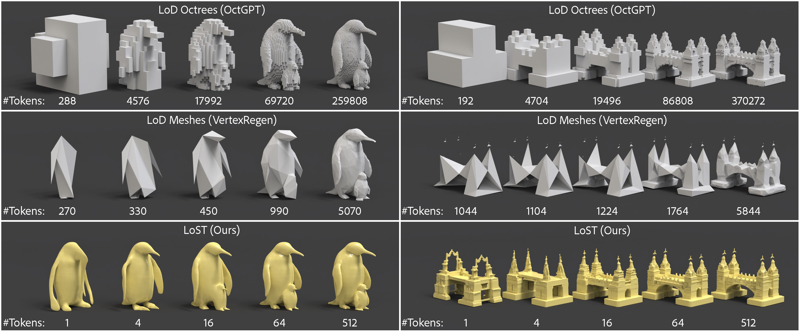
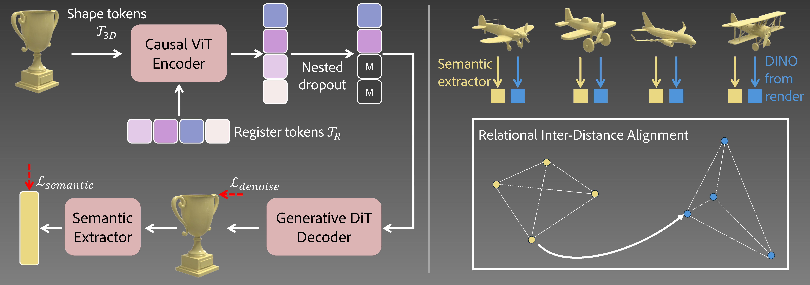
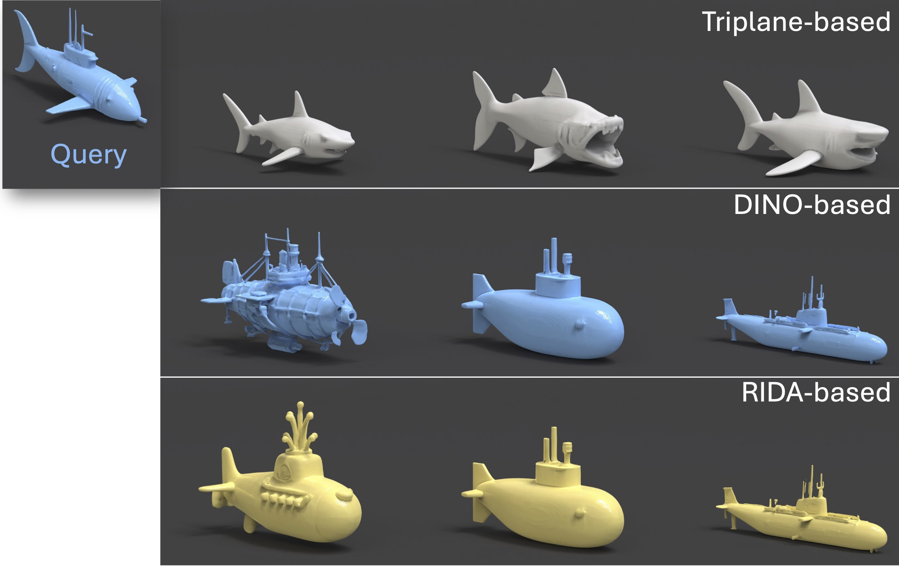

*This work was done while Niladri was an intern at Adobe Research.

TL;DR LoST replaces token inefficient geometric level-of-detail (LoD) with Level-of-Semantics tokenization. Using learnable tokens + nested dropout during training along with our proposed RIDA semantic loss, it creates "any-prefix" codes where even the first few tokens decode into complete, plausible shapes. This cuts token usage by 90–99.9% while achieving SOTA reconstruction and generation.
Tokenization is a fundamental technique in the generative modeling of various modalities. In particular, it plays a critical role in autoregressive (AR) models, which have recently emerged as a compelling option for 3D generation. However, optimal tokenization of 3D shapes remains an open question. State-of-the-art (SOTA) methods primarily rely on geometric level-of-detail (LoD) hierarchies, originally designed for rendering and compression. These spatial hierarchies are often token-inefficient and lack semantic coherence for AR modeling. We propose Level-of-Semantics Tokenization (LoST), which orders tokens by semantic salience, such that early prefixes decode into complete, plausible shapes that possess principal semantics, while subsequent tokens refine instance-specific geometric and semantic details. To train LoST, we introduce Relational Inter-Distance Alignment (RIDA), a novel 3D semantic alignment loss, inspired by relational knowledge distillation, that aligns the relational structure of the 3D shape latent space with that of the semantic DINO feature space. Experiments show that LoST achieves SOTA reconstruction, surpassing previous LoD-based 3D shape tokenizers by large margins on both geometric and semantic reconstruction metrics. Moreover, LoST achieves efficient, high-quality AR 3D generation and enables downstream tasks like semantic retrieval, while using only 0.1%–10% of the tokens needed by prior 3D AR models.
This interactive gallery demonstrates our multi-level tokenization. Starting from high-resolution meshes, we showcase reconstructions at different token levels [1, 4, 16, 64, 512 tokens], illustrating how semantic alignment increases with increasing number of tokens. Crucially, we see high fidelity geometric details at all token levels.
💡 Hover or tap to activate each viewer, then drag to rotate and scroll to zoom

Left: LoST encoder–decoder learns to order trainable register tokens by semantic saliency using the denoising loss and an auxiliary semantic loss guided by a pretrained 3D semantic extractor. Right: The 3D semantic extractor itself is pretrained using the proposed Relational Inter-Distance Alignment objective.
Qualitative comparison against recent AR based 3D generative methods. The conditioning reference image is shown in the final column. Llama-Mesh and OctGPT support text based conditioning so we use text prompts for them instead. LoST-GPT generates at higher fidelity while requiring much fewer tokens (we show results with even fewer token in the next section).
| Method | Num Tokens | Token Dimension | Total |
|---|---|---|---|
| Llama-Mesh | ~ 3758 | 4096 | ~ 15.4M |
| OctGPT | ~ 50K | 1 | 50K |
| ShapeLLM-Omni | 1024 | 3584 | ~ 3.7M |
| LoST GPT (ours) | 128 | 32 | 4,096 |
Each row shows the conditioning image followed by autoregressive generation using increasing token budgets. For simple shapes, we see that a few tokens (1 - 4) is often sufficient to capture the overall structure. We repeat some of the samples presented in the previous Autoregressive Comparison section to showcase that the generations by LoST-GPT are usable and high-fidelity across different token budgets.
Given a query shape (top), we show shape retrieval results using triplane, DINO, and RIDA features. While original triplane features focus on geometric similarity, RIDA mapped triplane features capture semantic alignment similar to DINO. In this example, we use a confusing query of a submarine shaped like a fish.

We compare reconstructions without versus with the proposed RIDA alignment loss at different token budgets. Each pair of columns shares the same token count, showing how RIDA enhances semantic fidelity. We note that the advantages of RIDA is more visible in challenging scenarios, particularly at times when the class can be incorrect when using few tokens (see example of hat where using few tokens without RIDA generates a cup).
@InProceedings{Dutt_2026_CVPR,
author = {Dutt, Niladri Shekhar and Shi, Zifan and Guerrero, Paul and Huang, Chun-Hao Paul and Ceylan, Duygu and Mitra, Niloy J. and Chen, Xuelin},
title = {LoST: Level of Semantics Tokenization for 3D Shapes},
booktitle = {Proceedings of the IEEE/CVF Conference on Computer Vision and Pattern Recognition (CVPR)},
month = {June},
year = {2026}
}